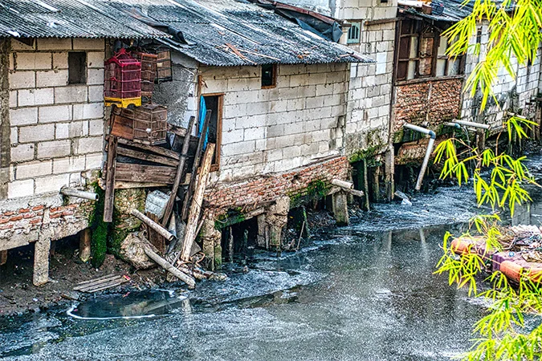
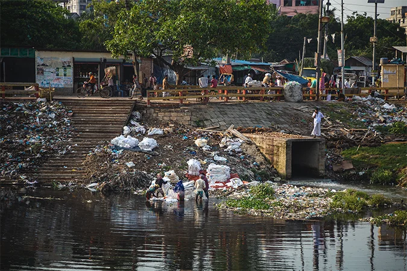

Em pauta
O cuidado começa quando a gente olha.


Pequenas escolhas

O planeta, mais de perto
Entenda os impactos ambientais e descubra como pequenas escolhas ajudam a proteger a nossa casa.
Em pauta


Pequenas escolhas